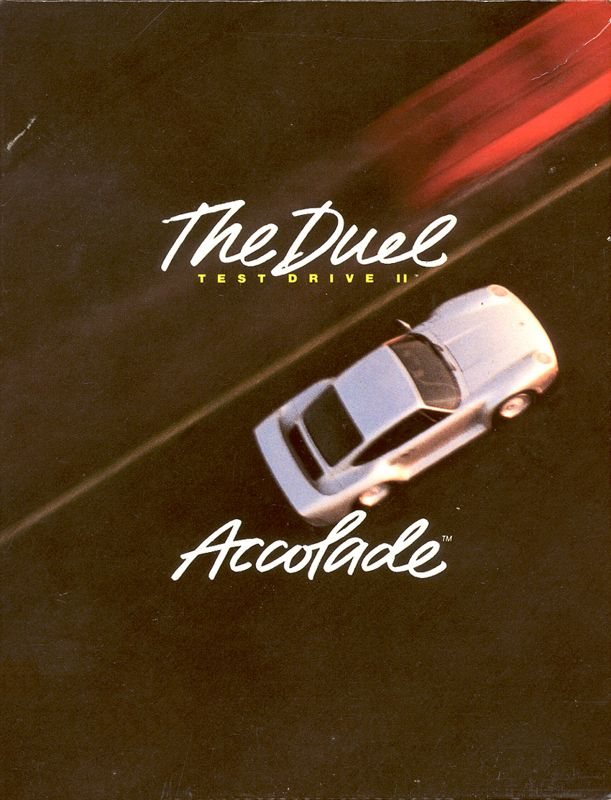
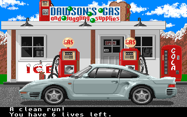
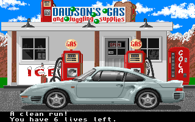

Play date: 1989
Developer: Distinctive Software
Publisher: Accolade
Memo: Mum work, fuel up.
Description: Like the original Test Drive, the focus of The Duel is driving exotic cars through dangerous highways, evading traffic, and trying to escape police pursuits. While the first game in the series had the player simply racing for time in a single scenario, Test Drive II improves upon its predecessor by introducing varied scenery, and giving the player the option of racing against the clock or competing against a computer-controlled opponent.
 
